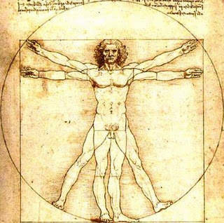

Disability As a Material Confined to Particular Bodies: Social Inclusion of Proper Bodies, and the Exclusion of Improper Bodies

There is more wisdom in your body than in your deepest philosophy! Friedrich Nietzsche
Societies, communities, and groups are usually based on the principles of obedience, respect, honor, and tolerance; however, instead of being applied to every individual in a respective environment, these principles became subverted into state enforced norms, laws, and rules, which ostracized anyone not conforming to “normative” or “proper” social, physical, cognitive, or economic abilities. As a result, we have reached the point where people follow that which does not necessarily bring good to the majority or create the functioning system, but that which benefits only those who devise the rules. For the great part of our lives, we carry the desire to belong—belong to a family, a group, a community, a work environment, or a society at large—which manifests itself in the desire to be accepted and materialized. This desire would never be so starkly present if it was not for the stratifications societies create. Not only do societies stratify its members based on their economic or social accomplishments, but also based on the physical construction of one’s body and abilities that a body can perform. Just because the majority of the state’s population can perform certain activities with their bodies, any individual who cannot perfrom such activities in the same or similar way is immediately viewed as disabled. Why is disability ascribed to particular bodies? In societies with thousands or millions of people, the particularities of bodies seem unnoticable and irrelevant, but when placed in a smaller community or a group, the particularities of bodies become starkly visible and surprisingly of great relevance. Aren’t all bodies particular and unique in a way, because the same bodily parts differ in different people, for example my toes may be bigger than my friends’, or my friends may have bigger hands than me. Today, more than ever, we use our bodies to depict our identities, our sense of belonging, our fears, desires, and frustrations, but most importantly, we use our bodies to voice that which we cannot/are not permitted to voice through language. Whether we are able-bodied or disabled, we use our bodies as a material or a platform for the portrayal of symbols. We all partake in this portrayal, either through what we wear or eat and drink, or through our bodily actions, and some of us do it in a more physically expressive ways, such as body piercing or body art. In light of this, I would not necessarily say that disability is a material located in particular bodies, but that we all inhabit bodies that may potentially become excluded by a group as a whole or the group members. Disability and disabled bodies can work as a highly constructive and educational social force, which makes us perceive bodies from a new persepective, shatters bodily norms, and makes us face and question that which we think of as uncomfortable, undesirable, unintelligible.
Ever since Professor Dolmage posed a question about the type of lexicon that shapes rhetorics, bodily rhetorics in particular, I have been thinking about whether sign language could shape and define rhetorics. How does sign language define a lexicon of the standard use of language? A great majority of humans thinks in terms of symbols and images, which are then expressed through language. The languges we speak and write have been extensively modified throughout centuries, and most of them have lost the symbolic represenation of letters that they once used to possess. This happened even to the current lingua franca, the modern English language, which was created through an adoption of words from various Indo-European languages (primarily Latin), and through the exclusion of a great part of the Old and Middle English lexicon where letters, apart from representing a particular phoneme, were written in a shape of specific symbols. How have we come to replace symbols with words, either spoken or written? Sign language is the language of symbols, with its own grammar, syntax, morphology, and vocabulary. It is probably the most symbolic language that has survived—even Chinese language is starting to lose its symbolic representation of alphabet. Isn’t sign language the archetypal use of language, and why can’t sign language be a primal definition of rhetorics? The first human communities and societies were communicating mainly through the use of symbols, with each community developing its own symbolism. Despite the fact that the majority of the world’s population communicates through the use of languages, we still interpret and analyze dreams or experiences through different symbols.